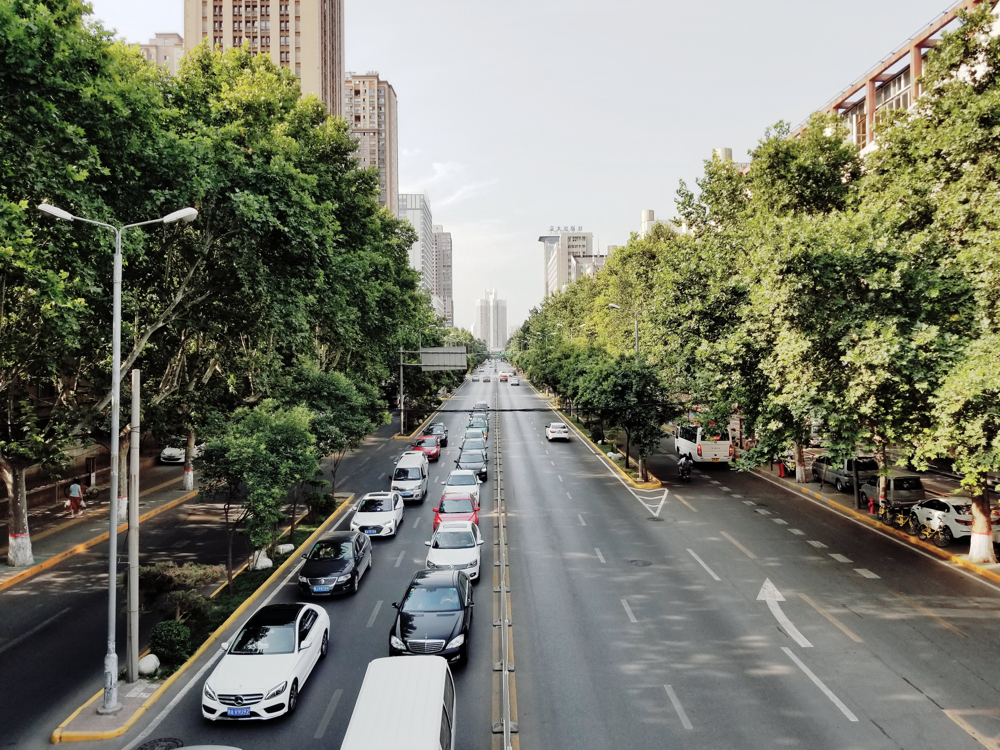
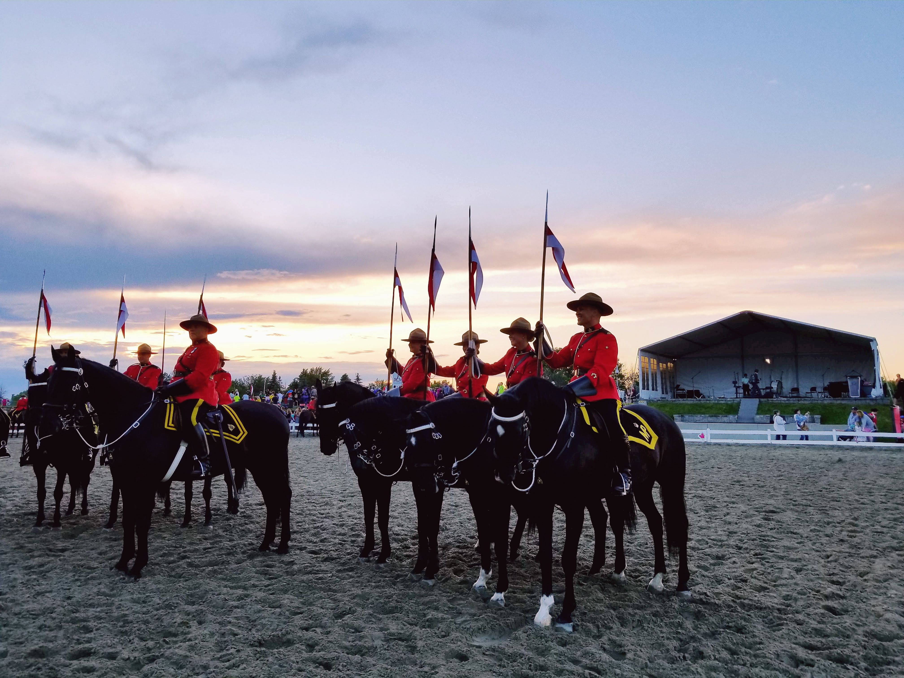
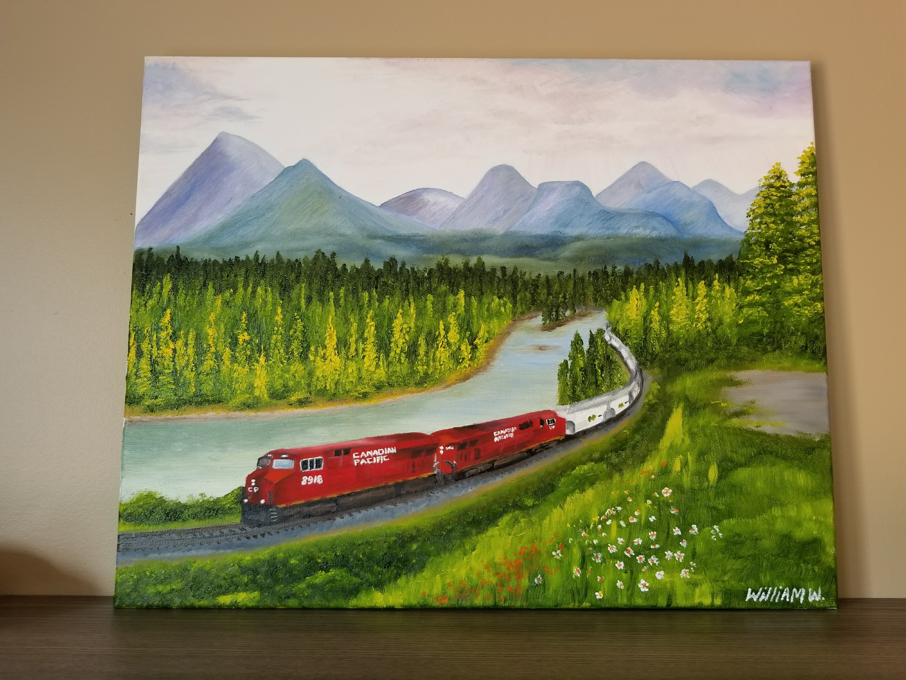
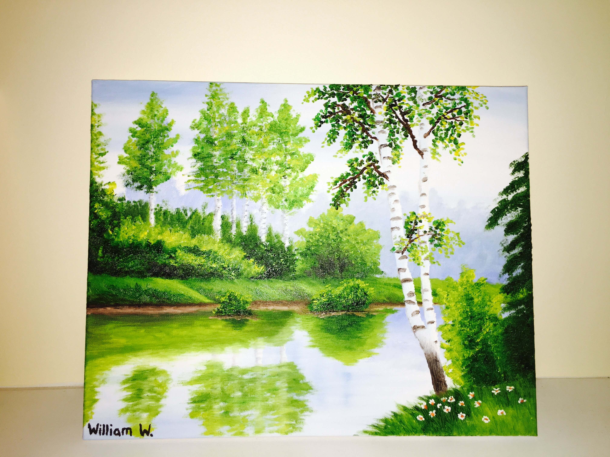
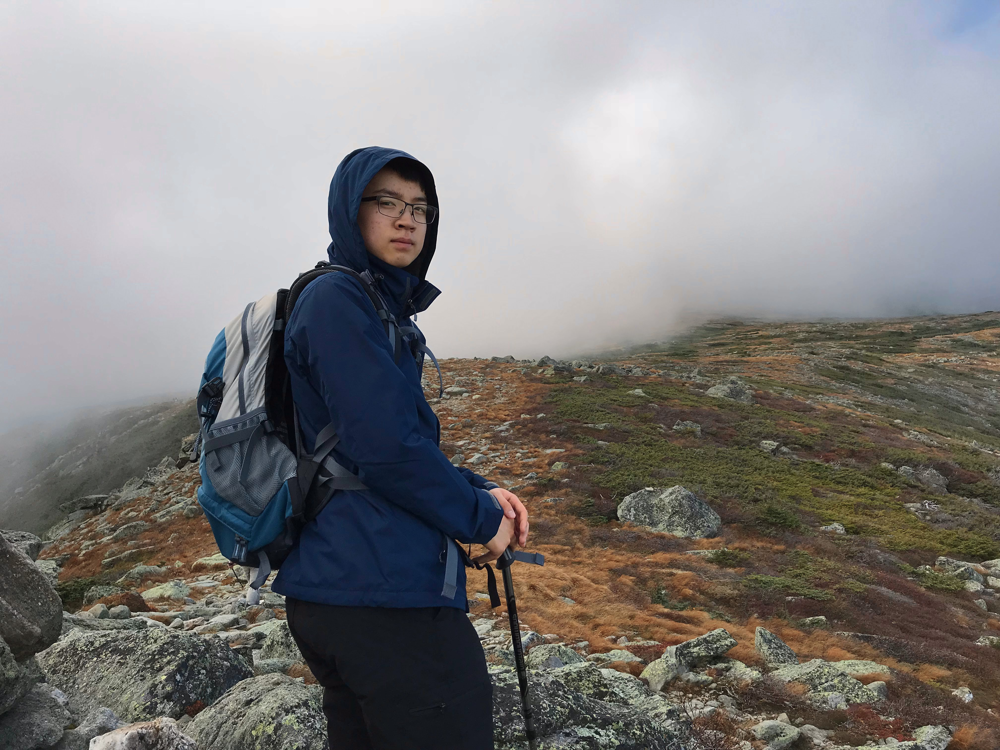
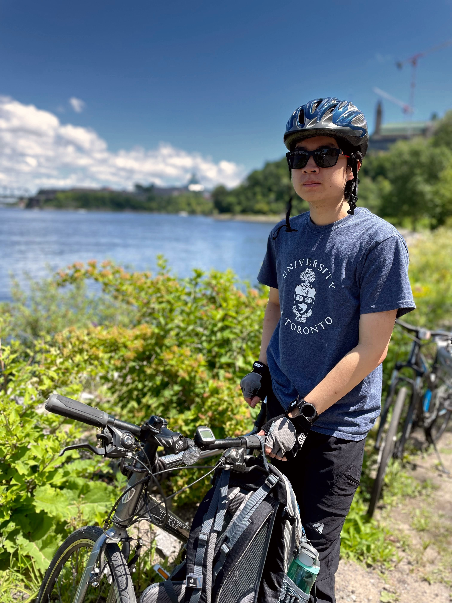
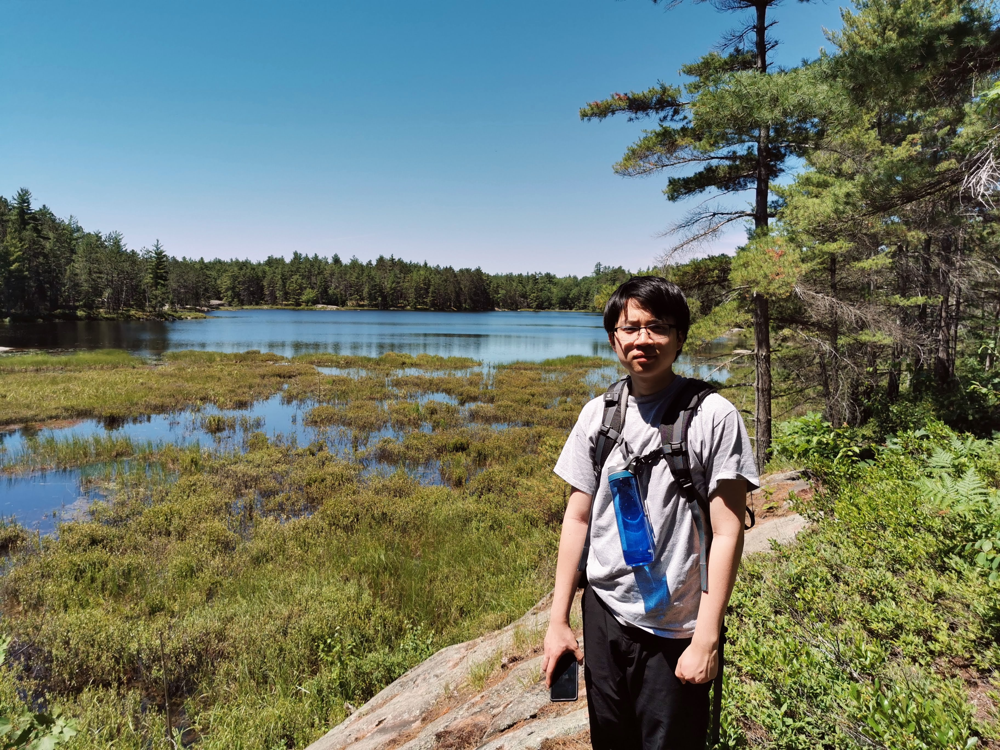

Photography
I enjoy photography! Here are some of my favourite shots:
Toronto skyline from Kensington Market
Pumpkinferno at Upper Canada Village
Peggy's Cove lighthouse, Nova Scotia
Tulip Festival in Ottawa
Lion's Head lighthouse, Bruce Peninsula, Ontario
Xi'an, China

Xi'an, China
Eagle's Nest lookout, Calabogie, Ontario
University College, U of T
Niagara Falls, Ontario

RCMP Musical Ride in Ottawa
Drawing & Painting
I enjoy oil painting as well as digital art on my iPad.

Freight train in the Rocky Mountains (oil painting)

Forest (oil painting)

The Canadian (digital painting)

Fall leaves (digital painting)

TTC streetcar (digital sketch)

Vintage car (digital sketch)
Hiking & Outdoors
In the summer, I like to go hiking and biking, and in the winter I go cross-country skiing in and around my hometown of Ottawa, Ontario.

Hiking up Mt. Washington, New Hampshire

Biking along the NCC Ottawa River Pathway

Hiking in Bon Echo Provincial Park, Ontario

Canoeing in Bon Echo Provincial Park, Ontario
Cross-country skiing, NCC Greenbelt, Ottawa